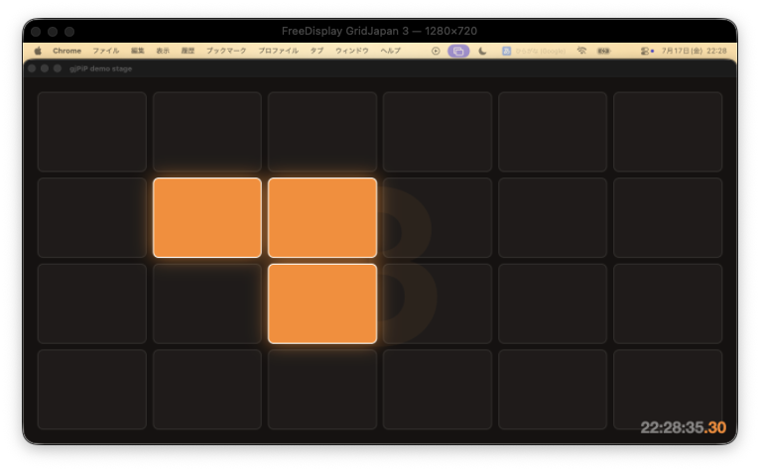
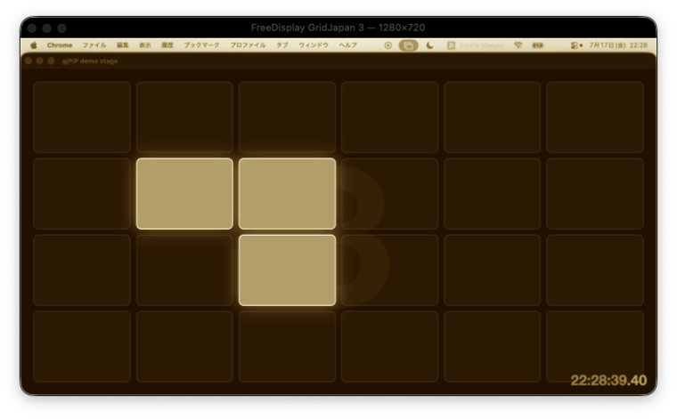
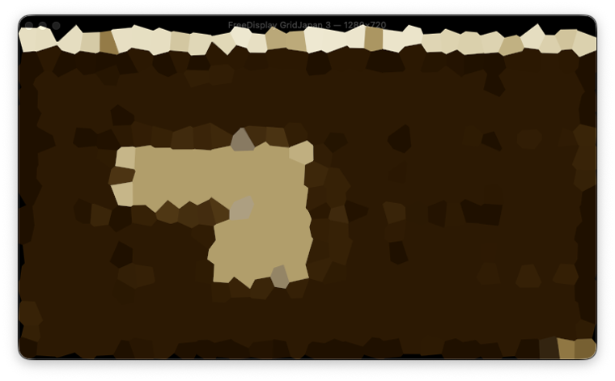
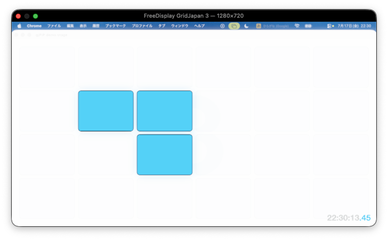
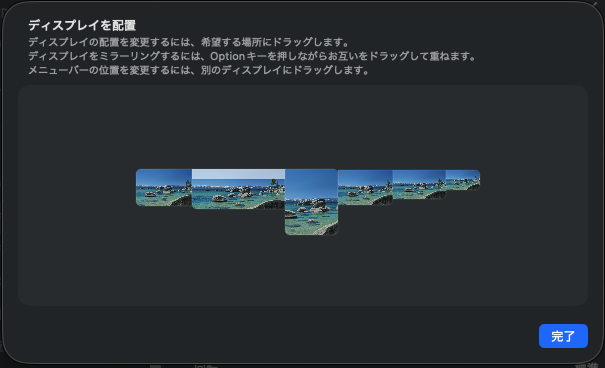

BetterDisplay에서는 PiP와 비디오 필터가 Pro($21.99, 일회성 구매) 기능입니다. gjPiP는 동급 기능을 무료, MIT License로 제공하고, BetterDisplay 공식 자료에 언급되지 않은 PiP를 통한 마우스 조작까지 지원합니다. 비교표 보기 →
01
메인 모니터를 PiP에 띄우면 무한 거울이 됩니다
Live capture, not a recording.
PiP(Picture-in-Picture)의 내용은 라이브 캡처입니다. 캡처한 화면 안에 다시 자기 자신이 들어가므로, 창을 드래그하면 거울 터널 전체가 함께 움직입니다.
실제 속도
02
PiP 안에서 두 번 클릭 → 커서 이동
Interaction mode.
첫 번째 클릭은 포커스, 두 번째 클릭은 조작 모드 진입입니다. 커서가 대상 디스플레이로 이동하고, 실제 마우스가 그대로 그쪽을 움직입니다. 창 가장자리까지 이동하면 현실로 돌아옵니다. 만일의 경우 Esc를 5번 연타하면 강제로 빠져나올 수 있습니다.
1.3배속 / 표시 중인 것은 물리 모니터가 없는 가상 디스플레이(1280×720)
03
모든 PiP를 한 번에 메인 모니터로 모으기
Gather.
PiP를 화면 밖이나 가상 디스플레이 위에서 잃어버려도, 메뉴의 「모든 PiP를 메인 모니터로 모으기」로 다시 불러올 수 있습니다.
1.4배속
04
17가지 비디오 필터를 PiP별로 적용
Core Image, chained.
기본 조정(밝기, 대비, 채도, 색조, 색온도, 감마), 샤프, 블러, 특수 효과(색 반전, 세피아, 모노크롬, 비네트, 에지 검출, 크리스털라이즈, 육각형 픽셀화)를 지원합니다. 여러 필터를 동시에 적용할 수 있고, 해제하면 원래대로 돌아옵니다. GPU에서 적용하므로 캡처 경로는 그대로 제로 카피를 유지합니다.

OFF

세피아

세피아 + 크리스털라이즈(동시 적용)

색 반전
실제 스크린샷
05
기능
여러 PiP를 동시에
디스플레이마다 PiP를 열 수 있습니다. 각각은 독립적인 캡처입니다.
PiP별 개별 설정
항상 앞에 표시, 프레임레이트, 탈출 방향, 필터를 창마다 따로 설정할 수 있습니다.
항상 최상단
기본값은 OFF입니다. ON으로 바꾸면 다른 창에 가려지지 않지만 Mission Control에는 나타나지 않습니다.
화면 끝까지 움직이면 현실로 돌아옵니다
조작 모드에서 빠져나오는 방식은 모니터 밖으로 나가는 동작과 같습니다. 출구로 사용할 가장자리는 상하좌우에서 ON/OFF할 수 있으며, 기본값은 아래쪽만 OFF입니다(Dock을 여는 위치이기 때문).
프레임레이트
30/60/120 fps를 PiP별로 전환할 수 있습니다.
강제 탈출
Esc 5번 연타 또는 Control + Command + Esc로 언제든 마우스를 되찾을 수 있습니다.
06
비교
BetterDisplay Pro와의 주요 차이는 아래와 같습니다. gjPiP는 BetterDisplay Pro에 해당하는 PiP 기능($21.99)을 무료로 제공합니다. PiP를 통한 마우스 조작은 BetterDisplay 공식 README에 언급되지 않은 기능입니다. 반면 크롭, 회전, 줌은 아직 구현되어 있지 않습니다.
항목
BetterDisplay
FreeDisplay(공식)
GridJapan/FreeDisplay
GridJapan/gjPiPWindow
가격
무료 버전 + Pro $21.99
무료
무료
무료
소스 공개
×
◎
◎
◎
DDC 제어(밝기, 대비)
◎
◎
◎ + 크래시 수정
−
HiDPI 가상 디스플레이
◎(유연한 HiDPI는 Pro)
◎
◎ + 해상도 저장
−
디스플레이 배치
◎
◎
◎ + 메인 화면 되돌림 문제 수정
−
Picture in Picture
◎(Pro)
×
×
◎ 무료
PiP를 통한 마우스 조작
언급 없음
×
×
◎ 조작 모드
비디오 필터
◎(Pro)
×
×
◎ 17종, 동시 적용
알려진 버그 4건 수정
−
×(버그 있음)
◎ 수정 완료
−
BetterDisplay 열은 공식 GitHub README 및 betterdisplay.pro의 설명(2026-07 기준)을 바탕으로 합니다. 「언급 없음」은 공식 자료에서 해당 기능 설명을 찾을 수 없다는 뜻입니다. FreeDisplay 열은 GridJapan/FreeDisplay 리포지토리의 코드와 README를 바탕으로 합니다.
07
설치
소스에서 빌드합니다. TCC(화면 기록, 손쉬운 사용)는 서명된 .app 번들에만 권한을 부여하므로 반드시 build.sh를 사용하세요.
# 자체 서명 인증서 만들기(처음 한 번만. 다시 빌드해도 권한이 사라지지 않음)
./make-signing-cert.sh
# 빌드 후 실행
./build.sh
open build/gjPiP.app
권한
용도
설정 위치
화면 기록
디스플레이 캡처
개인정보 보호 및 보안 → 화면 기록 및 시스템 오디오 녹음
손쉬운 사용
조작 모드(마우스 전달)
개인정보 보호 및 보안 → 손쉬운 사용
두 권한 모두 허용한 뒤 앱을 다시 시작해야 합니다. 권한 요청 대화상자는 다른 디스플레이에 표시될 수 있습니다.
08
FreeDisplay와 함께 사용
가상 디스플레이 자체는 GridJapan/FreeDisplay가 만듭니다. 공식 FreeDisplay에 남아 있는 버그 4건(DDC 크래시, 메뉴가 비어 보이는 문제, 메인 디스플레이 설정 되돌림, 세 번째 디스플레이 생성 불가)을 수정하고, 가상 디스플레이의 해상도를 기억하도록 만든 fork입니다. gjPiP는 그 보이지 않는 화면을 띄우고 조작하는 쪽입니다.

macOS 시스템 설정 「디스플레이 배치」 — 물리 3대 + 가상 3대가 나란히 표시됨가상 디스플레이에서도 해상도와 리프레시 레이트(75Hz)를 선택할 수 있음